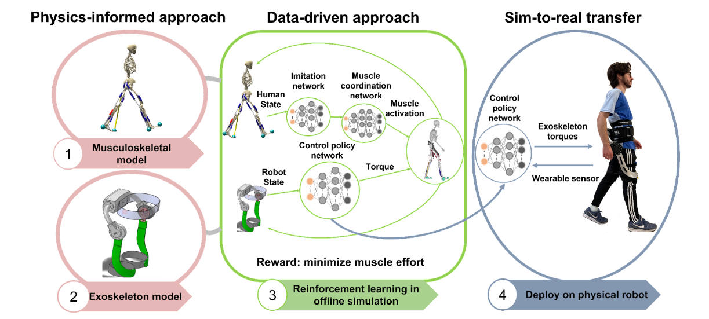

Reinforcement Learning
Our goal is to create safe, assured intelligent control systems for physical robots to collaborate with human and interact with the environment. Applications include wearable exoskeleton, prothesis, humanoid robots, surgical robots, and autonomous vehicles.
Simulation to Reality: Learning Multi-gait Exoskeleton Control for Mobility Assistance via Musculoskeletal Modeling
we demonstrate the feasibility of developing control strategies for hip exoskeleton entirely in simulation via reinforcement learning. We created a data-driven and physics-informed approach that leverages reinforcement learning in concert with a musculoskeletal model to automatically learn a robot controller entirely in simulation.

Physics-informed and data-driven approach for autonomous control of an untethered hip exoskeleton to augment human walking, running, and stair climbing. The framework encapsulates 1) musculoskeletal model, 2) exoskeleton model, 3) deep reinforcement learning in simulation of human-exoskeleton interaction, and 4) simulation-to-reality transfer for the actual deployment on the physical robot.
***** Maintenance ******